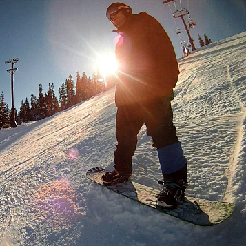
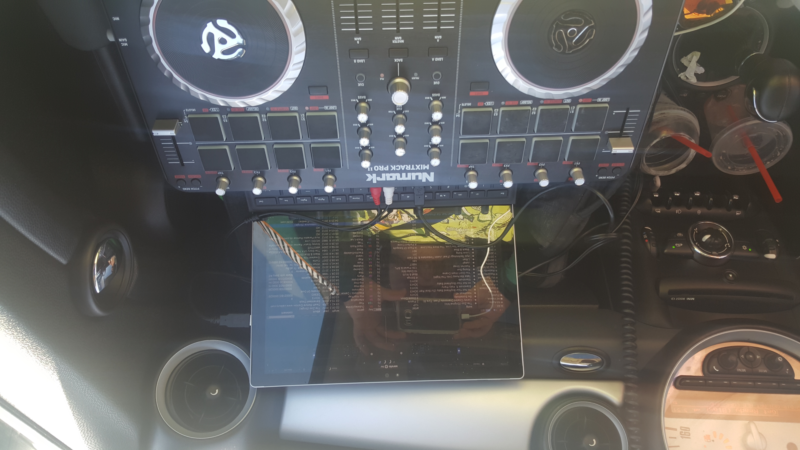

I learned to ski at 3 years old and was finally allowed to snowboard at 7.

After teaching for 12 years, I got a full-time job and decided to give up
teaching in order to have more riding time. But I still like to teach and I
am always happy to help others learn!
I was a DJ in college for 5 years, performing weddings and playing weekly at a local bar.
It wasn't until I stopped when I realized how much I really loved to DJ. Armed with my passion
for electronic music, I picked up a table in 2014 to mix for fun.

This is a picture of my setup during our weekly 4.5 hour drives to Tahoe for snowboarding when
I lived in N. Cal.
After getting the deck, I also got into the producing side, getting Ableton Live 9 suite.
Having never taken a music class in my life, I am still learning a lot, but having a great time
doing it!
Check me out on the following platforms!
Seahawks!
Xbox Gamertag: meleemassacre